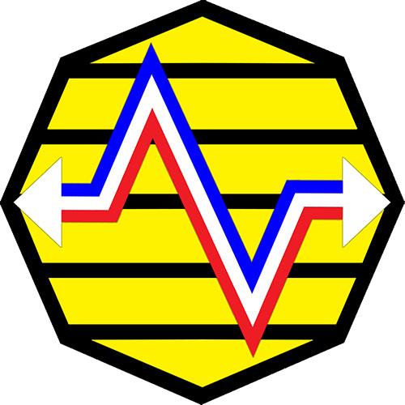
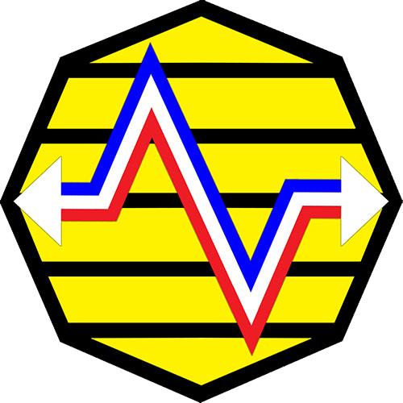
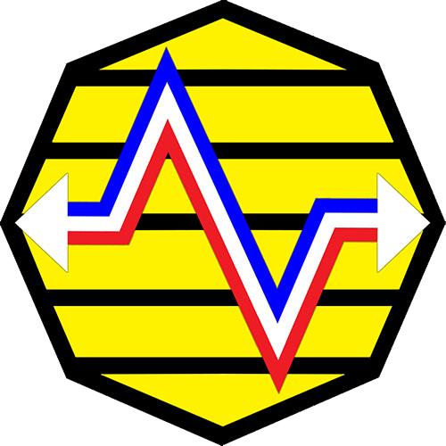

Gemerlapan (Gelora Media Rakyat Delapan) adalah situs siswa/i SMAN 8 Jakarta yang merupakan kolaborasi antara Anggota Ekstrakurikuler Media Siswa XXXI dan Ekstrakurikuler Teksound XXXV
Kembali

Gemerlapan (Gelora Media Rakyat Delapan) adalah situs siswa/i SMAN 8 Jakarta yang merupakan kolaborasi antara Anggota Ekstrakurikuler Media Siswa XXXI dan Ekstrakurikuler Teksound XXXV
Follow us on Instagram :
@teksound8
@mediasiswa8
Follow us on Instagram :
@teksound8
@mediasiswa8